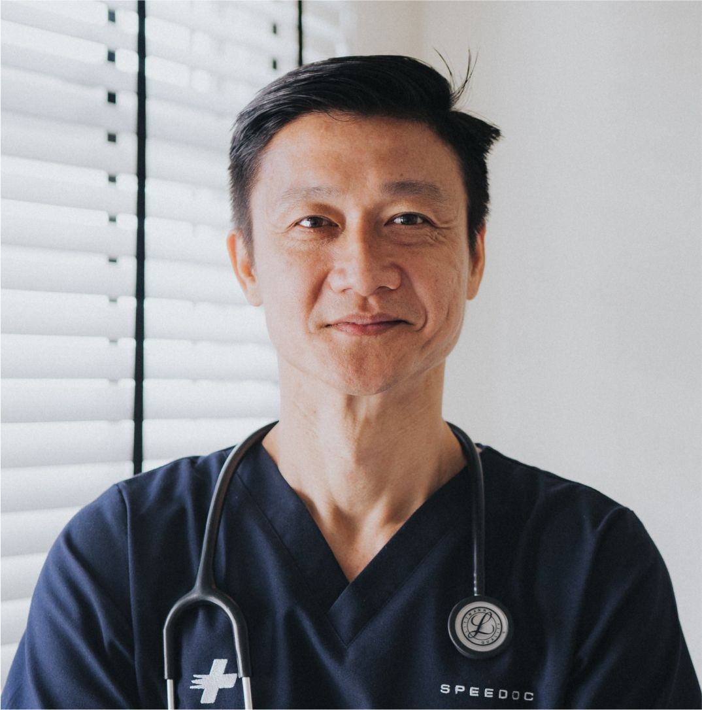

Our team of trusted doctors is here to guide you on every step of your health journey.
With diverse specialties and a shared passion for patient wellness, our clinicians combine professional experience with genuine care.
Whether you’re booking a routine check-up or managing a chronic condition, we’re here to support you with personalized attention and expert advice.
Dr Tan Wei Ming
Family Physician
Senior Family Physician, M.B.B.S (Singapore), Grad Dip (Family Medicine)
Dr Tan Wei Ming has over 15 years of experience in primary healthcare and family medicine. He previously served at National University Hospital (NUH) and SingHealth Polyclinics, focusing on chronic disease management, preventive care and community wellness programs. Dr Tan is well-known for his compassionate consultation style, dedication to patient education and commitment to building long-term trust with families across all ages and backgrounds in Singapore’s healthcare system.
Dr Aisha Rahman
Internal Medicine
Consultant Physician, M.B.B.S (Singapore), M.R.C.P (UK), FAMS (Internal Medicine)
Dr Aisha Rahman has over 12 years of experience in diagnosing and managing complex medical conditions, including diabetes, hypertension, and autoimmune disorders. She previously served at Singapore General Hospital (SGH) and Changi General Hospital (CGH), focusing on comprehensive care for adult patients. Dr Aisha is well known for her empathetic approach, meticulous follow-up, and commitment to empowering patients through clear communication.

Dr David Ng
Pediatrics
Consultant Pediatrician, M.B.B.S (Singapore), M.Med (Paediatrics), FAMS (Paediatrics)
Dr David Ng is a dedicated pediatrician with more than 12 years of experience caring for infants, children and adolescents. He trained and practised at KK Women’s and Children’s Hospital (KKH), where he managed childhood immunisations, growth tracking and developmental disorders. Dr Ng is known for his gentle demeanour, strong communication with parents and his ability to create a comforting environment that helps young patients feel safe and supported during their health visits.
Dr Chloe Lim
Dermatology
Consultant Dermatologist, M.B.B.S (Singapore), M.Med (Internal Medicine), FAMS (Dermatology)
Dr Chloe Lim is a board-certified dermatologist with extensive training in medical and aesthetic dermatology at the National Skin Centre (NSC). She specialises in the management of eczema, acne, pigmentation and hair disorders using evidence-based therapies. Her professional interest lies in combining clinical expertise with patient-centred education to promote lifelong skin health. Dr Lim believes that every individual deserves personalised and accessible care for healthy, radiant skin.